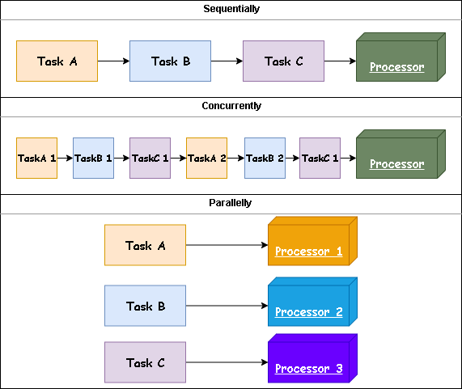

The impact of GIL
Before talking about multi-threading in python, you must know the term GIL first. GIL, short for Global Interpreter Lock, is a mutex that allows only one thread to hold the control of the Python interpreter.
GIL guarantees the thread-safty of Reference Counting ---- the memory management mechanism adoped by Python with low overhead and few performance loss of single-threaded programme. C libraries that are not thread-safe also become easier to integrate.
However, the nature of GIL that prevents CPU-bound threads from executing in parellel results of a performance bottleneck of multi-threaded CPU-bound code.
Example
1 | import time |
The code above takes 6.20024037361145 seconds, whereas
1 | import time |
takes 6.924342632293701 seconds. This increase is the result of acquire and release overheads added by the lock.
Reference Counting
In short, within Python, each object owns have a reference count variable that keeps track of the number of references that point to the object. When this count reaches zero, the memory occupied by the object is released. For example:
1 | import sys |
In the above example, the reference count for the empty list [] was 3, which are: a, b and the argument passed to sys.getrefcount().
Compared with other thread-safe memory management like garbage collection, reference counting produces lower overhead and makes few impact on the performance of single-threaded programme.
Solution
The most popular way is to use a multi-processing approach instead of multi-threading, with more overheads of processing creating and context switching as trade-off. Each task then gets its own process, memory space and Python interpreter; the GIL won’t be a problem any more.
Alternatively you may use other Python interpreters (Jython, IronPython and PyPy etc.) as GIL exists only in CPython.
Concurrency vs Parallelism
The Art of Concurrency defines the difference as
A system is said to be concurrent if it can support two or more actions in progress at the same time. A system is said to be parallel if it can support two or more actions executing simultaneously.

threading module in Python3
threading
This module defines the following functions:
threading.active_count(): Return the number of Thread objects currently alive.threading.current_thread(): Return the current Thread object.threading.enumerate()Return a list of all Thread objects (include dummy and deamon threads) currently alive.threading.main_thread(): Return the main Thread object.threading.get_ident(): Return the thread identifier of the current thread. It is a nonzero integer and may be recycled when a thread exits and another thread is created.threading.get_native_id(): Return the native Thread ID of the current thread assigned by the Operating System.
threading.Thread
The constructor of threading.Thread is class threading.Thread(group=None, target=None, name=None, args=(), kwargs={}, *, daemon=None), where
groupreserved for future extension forThreadGroup.nameis the thread name. By default, it is of the form "Thread-N".targetis the callable object to be invoked by therun()method.argsis the argument tuple for the target invocation.kwargsis a dictionary of keyword arguments for the target invocation. Defaults to {}.daemonshould be a boolean orNone(means inheriting from the current thread).
Usage
1 | import threading |
Life Cycle
A thread is considered 'alive' after start() and before terminated. It could be blocked by calling other thread's join() method or by synchronization mechanism introduced later.
A thread can be flagged as a "daemon thread". Python programme will terminate when only daemon threads are left. Since daemon threads may be abruptly stopped at shutdown, their resources may not be released properly. If you want the threads be stopped gracefully, make them non-daemonic and use a suitable signalling mechanism such as an Event.
A "Dummy thread" is a thread of control started outside the threading module, such as directly from C code. They are always considered alive and daemonic, and cannot be join() since it is impossible to detect the termination of them.
Deamon vs Non-Deamon
1 | import threading |
Output will be
1 | daemon Starting |
Join
1 | import threading |
Output will be
1 | daemon Starting |
API
.start(): Start the thread. ARuntimeErrorwill raise if the same thread object is called more than once..run(): The defaultrun()will invoke the callable object passed to thetarget..join(timeout=None)Wait until the called thread terminates or TIMEOUT. The unit oftimeoutis second.join()always returnsNone; User could callis_alive()to check whether it is terminated or a timeout happened.join()will raise aRuntimeErrorif it will cause a deadlock. It is also an error to join() a thread before it has been started and attempts to do so raise the same exception.name: Return the name of current thread. Multiple threads may be given the same name.ident: Return the the thread identifier of this thread or None if the thread has not been started.native_id: Return the native integral thread ID of this thread.is_alive(): Return whether the thread is alive.daemon: Return whether this thread is a daemon thread (True) or not (False). This must be set beforestart()is called.
Subclassing Thread
The subclass must override the function run(); If it's required to overrides the constructor, the base class constructor (Thread.__init__()) must be invoked before anything else.
1 | import threading |
Output will be
1 | Thread-1 running with (0,) and {'a': 'A', 'b': 'B'} |
Thread.Timer
Timer is a subclass of Thread with a constructor class threading.Timer(interval, function, args=None, kwargs=None). A Timer starts its work after a delay, and can be stopped (even before its action has begun) by calling the cancel() method.
1 | import threading |
Output will be
1 | starting timers |
Synchronization
Lock
Lock is currently the lowest level synchronization primitive available. The code block surrounded by .acquire() and .release() is called the critical section and is protected to only run in one thread at a time.
A primitive lock is in one of the two states: "locked" or "unlocked" and starts with a unlocked state, .aquired() will change an unlocked to locked and will be blocked by a locked lock. .release() will change a locked to unlocked. All methods are executed atomically.
class threading.Lock
.acquire(blocking=True, timeout=-1)Acquire a lock, blocking or non-blocking.- When
blocking = True, acquiring alockedlock will make the thread be blocked until the lock is released; then.acquire()will lock it and returnTrue. - When
blocking = False, acquiring alockedlock will returnFalseimmediately without any blocking. - The floating-point
timeoutshould be used withblocking = True.
- When
.release(): Release a lock. This can be called from any thread, not only the thread. Trying releasing an unlocked lock will cause aRuntimeError..locked(): Return whether the lock is locked.
1 | import threading |
RLock
A reentrant lock must be released by the thread that acquired it. Once a thread has acquired a reentrant lock, the same thread may acquire it again without blocking; the thread must release it once for each time it has acquired it.
Semaphore
Semaphore is one of the oldest synchronization primitives in the history of computer science. It manages an internal counter which is decremented by each .acquire() and incremented by .release(). When the counter become zero, .acquire() my block the thread and wait for a .release()
class threading.Semaphore(value=1)
valueis the initial value of the counter. If the value given is less than 0, ValueError is raised..acquire(blocking=True, timeout=None)Acquire a semaphore..release()Release a semaphore.class threading.BoundedSemaphore(value=1)is a subclass that at any time the value of counter will not exceed its initiali value otherwiseValueErrorwill be raise.
1 | import threading |
Output
1 | Running: ['thread_0'] |
Condition Variable
A condition variable allows one or more threads to wait until they are notified by another thread. It is always associated with a lock, whether be passed in initialization of be created by default. Passing one in is useful when several condition variables must share the same lock. with statement implicitly calls .acquire() and release() of the associated lock.
wait() will release the lock, and then block the thread until another thread invokes notify() or notify_all(). notify() and notify_all() will wake up one and all of the threads waiting for the condition variable respectively. They don’t actually release the lock.
class threading.Condition(lock=None)
lockmust be a Lock or RLock object. Otherwise, a new RLock object is created and used as the associated lock.acquire(*args)Acquire the associated lock.release()Release the associated lock.wait(timeout=None)Release the associated lock, wait until notified or timeout. Once awakened or timed out, it re-acquires the lock and returns. It must be invoked after acquire the associated, otherwise aRuntimeErroris raised.wait_for(predicate, timeout=None)Equivalent to1
2while not predicate():
cv.wait()notify(n=1)Wake up at mostnthreas waiting for the condition variable. If the calling thread has not acquired the lock when this method is called, a RuntimeError is raised.notify_all()Wake up all threads waiting on this condition. If the calling thread has not acquired the lock when this method is called, a RuntimeError is raised.
1 | import threading |
Event
An event object manages an internal flag that can be set to true with the set() method and reset to false with the clear() method. The wait() method blocks until the flag is true. The flag is initially false.
class threading.Event
is_set()set()Set the internal flag to true. All threads waiting for will be awakened.clear()wait(timeout=None)
1 | import threading |
Output
1 | Wait_for_event_timeout starting |
Barrier
This class provides a simple synchronization primitive for use by a fixed number of threads that need to wait for each other. Each of the threads tries to pass the barrier by calling the wait() method and will block until all of the threads have made their wait() calls. At this point, the threads are released simultaneously.
The barrier can be reused any number of times for the same number of threads.
Constructor
class threading.Barrier(n, action=None, timeout=None)
nNumber of threads that required to pass the barrier.actionis a callable to be called by one of the threads when they are released.timeoutis the default timeout value.
API
.wait(timeout=None)Wait to pass the barrier. When all the threads party to the barrier have called this function, they are all released simultaneously. The return value is an integer in the range0ton – 1. If the call times out, the barrier is put into the broken state and raise aBrokenBarrierErrorexception..reset()Reset the barrier to the default, empty state. Any threads waiting on it will receive theBrokenBarrierErrorexception..abort()Put the barrier into a broken state. This causes any active or future calls to wait() to fail with theBrokenBarrierErrorexception..partiesThe number of threads required to pass the barrier..n_waitingThe number of threads currently waiting in the barrier..brokenA boolean that is True if the barrier is in the broken state.
1 | import threading |
1 | Thread-1 is Waiting |
Queue
The queue module implements multi-producer, multi-consumer queues. The Queue class in this module implements all the required locking semantics.
The module implements three types of queue, which differ only in the order in which the entries are retrieved. FIFO queue, LIFO queue, priority queue.
Constructor
1 | class queue.Queue(maxsize=0) |
Where if maxsize is less than or equal to zero, the queue size is infinite.
Exception
queue.Empty: Be raised when non-blockingget()orget_nowait()is called on a empty queue.queue.Full: Be raised when non-blockingput()orput_nowait()is called on a full queue.
API
.qsize()Return the size of the queue, approximatly..empty()Return whether the queue is empty, approximatly..full()Return whether the queue is full, approximatly..put(item, block=True, timeout=None)Put item into the queue. By default if the queue is full, the thread will be blocked until a free slot is available..put_nowait(item)Equivalent to put(item, False)..get(block=True, timeout=None)Remove and return an item from the queue. By default if the queue is empty, the thread will be blocked until an item is available..get_nowait()Equivalent to get(False)..task_done()Indicate that a formerly enqueued task is complete. Used by queue consumer threads. Raises a ValueError if called more times than there were items placed in the queue.Queue.join()Blocks until all items in the queue have been gotten and processed. The count of unfinished tasks goes up whenever an item is added to the queue and goes down whenever a consumer thread callstask_done(). When the count of unfinished tasks drops to zero, join() unblocks.
1 | import threading, queue |